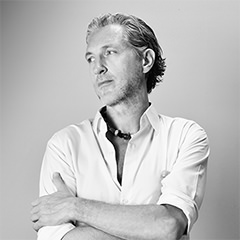

艺术总监简介
马塞尔·万德斯

马塞尔·万德斯，荷兰籍，当今世界倍受瞩目的顶尖设计师之一，尤其活跃于产品艺术与室内装饰设计领域。
在建筑设计方面，如德国的Kameha Grand Hotel Bonn、迈阿密的Mondrian South Beach Hotel都融入了马塞尔·万德斯的设计理念。
他开设了兼具设计和展示功能的“Moooi”工作室，并亲自担任艺术总监，将他的设计理念和作品传播至全球。他的作品不仅在世界各地展出，还被纽约的MoMA、伦敦的V&A Museum等著名美术馆所收藏。
此外，马塞尔·万德斯还发布了多部设计相关著作。2011年发表的《Interiors》正是他自身涉足室内装饰设计领域的心得写照。
现今，马塞尔·万德斯依然已是The New York Times、FINANCIAL TIMES等众多全球权威媒体的宠儿，有关他的报道层出不穷。
2010年，时值40周年华诞的黛珂，邀请这位设计界的前卫奇才，担纲黛珂品牌全球艺术总监，携手开启黛珂全新篇章。